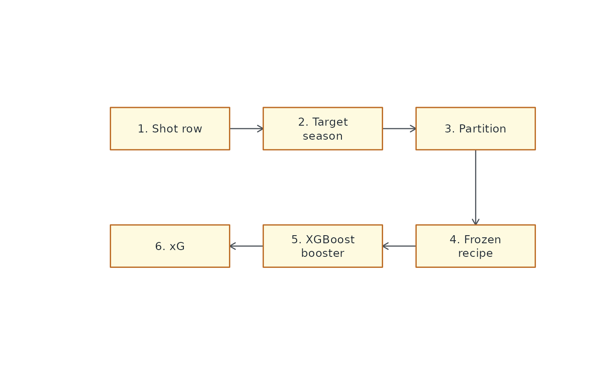
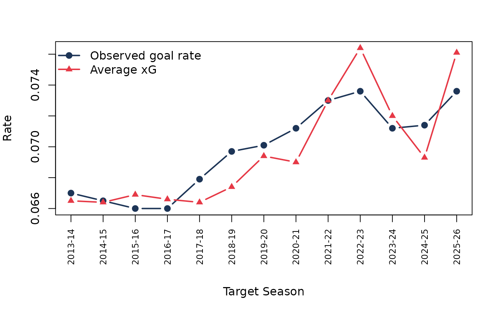

How nhlscraper Scores Expected Goals
Source:vignettes/expected-goals-model.Rmd
expected-goals-model.RmdWhat xG Means Here
Expected goals, or xG, is the estimated probability that a shot
becomes a goal. In nhlscraper,
calculate_expected_goals() adds one column,
xG, to a current-schema play-by-play table. Non-shot rows
receive NA; shot-attempt rows receive probabilities from
versioned XGBoost boosters that are cached locally on first use.
The package does not train models during package use. It ships the frozen runtime preprocessing contract and downloads the matching trained boosters from the companion NHLxG model store when they are first needed. That contract is just as important as the boosters: numeric medians, categorical levels, dummy-column maps, and final feature order all have to match training exactly.
Basic Use
pbp <- nhlscraper::gc_play_by_play(2023030417)
pbp <- nhlscraper::add_shift_times(
play_by_play = pbp,
shift_chart = nhlscraper::shift_chart(2023030417)
)
pbp <- nhlscraper::add_deltas(pbp)
pbp <- nhlscraper::calculate_expected_goals(pbp)calculate_expected_goals() can derive several missing
context columns itself, but the richest input is a play-by-play that
already has shift timing and event-to-event deltas. The function keeps
the legacy model argument for compatibility, but that
argument is ignored.
Six Shot Environments
The model system is not one giant all-purpose classifier. Each target-season vintage contains six mutually exclusive models:
| partition | name | rows_sent_there |
|---|---|---|
| sd | Standard 5v5 | Regulation 5v5 shots with both goalies in net, plus safe fallbacks. |
| ev | Other even strength | Remaining even-strength shots such as 4v4 and 3v3. |
| pp | Power play | Shots where the shooting team has a skater advantage. |
| sh | Short-handed | Shots where the shooting team has fewer skaters. |
| en | Empty net | Shots at an empty opposing net. |
| ps | Penalty shot / shootout | Penalty-shot and shootout-style one-on-one attempts. |
The order matters. A shootout attempt is handled before empty-net or manpower rules. Empty-net shots are pulled out before normal strength partitions. Standard 5v5 is separated from other even-strength play because its sample is large and its scoring environment is cleaner.
Runtime Routing
Each shot is routed by game season and game state:

Runtime routing from play-by-play row to xG value.
Historical games use the target-season vintage when one exists. Seasons before the supported range use the earliest available vintage. Seasons beyond the model range use the latest deployment vintage. That behavior keeps scoring possible for old and future rows while preserving rolling-model logic where exact vintages exist.
Feature Families
The feature set is intentionally broader than “distance plus angle.” The model frame includes information about where the shot came from, what happened just before it, who took it, who was in net, and what state the game was in.
| family | examples |
|---|---|
| Shot geometry | x/y, normalized x/y, distance, angle |
| Shot location bins | slot, net-front, point, flank, perimeter indicators |
| Previous-event movement | delta seconds, delta x/y, delta distance, delta angle |
| Rush and rebound context | isRush, isRebound, createdRebound, previous event type |
| Game state | score differential, cumulative shots/Fenwick/Corsi |
| Strength state | skater counts, manpower differential, empty-net flags |
| Shooter and goalie biometrics | height, weight, handedness where available |
| Shift timing | seconds elapsed/remaining in shift for on-ice players |
| Shootout counters | attempt order for one-on-one partitions |
Not every partition uses every feature in the same way, and not every row has every upstream field. The preprocessing bundle is responsible for converting the available public schema into the exact numeric matrix the booster expects.
Training Windows
Each completed target-season vintage is trained only on earlier seasons. For a target season, the training window is the three immediately previous seasons. That keeps the evaluation leak-free: the model never trains on the season it is being evaluated against.
| target_vintage | training_window | note |
|---|---|---|
| 2013-14 | Earliest supported historical window | Uses the earliest supported vintage behavior. |
| 2018-19 | 2015-16, 2016-17, 2017-18 | Example completed rolling vintage. |
| 2023-24 | 2020-21, 2021-22, 2022-23 | Example modern completed rolling vintage. |
| 2026-27 deployment | 2023-24, 2024-25, 2025-26 | Latest deployment model used for future/default scoring. |
Deployment Vintage Size
The latest deployment vintage is trained on a large three-season sample, but the six partitions differ dramatically in size and base goal rate.
| partition | train_seasons | rows | goals | goal_rate |
|---|---|---|---|---|
| sd | 2023-24, 2024-25, 2025-26 | 283688 | 16881 | 0.0595 |
| ev | 2023-24, 2024-25, 2025-26 | 7654 | 813 | 0.1062 |
| pp | 2023-24, 2024-25, 2025-26 | 59254 | 5678 | 0.0958 |
| sh | 2023-24, 2024-25, 2025-26 | 8186 | 595 | 0.0727 |
| en | 2023-24, 2024-25, 2025-26 | 2891 | 1596 | 0.5521 |
| ps | 2023-24, 2024-25, 2025-26 | 2027 | 645 | 0.3182 |
This is why the partitions exist. Empty-net attempts and penalty shots are not rare versions of ordinary five-on-five shots; they are different scoring problems with different base rates.
Completed-Season Evaluation
Completed-season evaluation currently covers target seasons from
2013-14 through 2025-26.
| season | rows | goal_rate | xg_rate | roc_auc | calibration_ratio |
|---|---|---|---|---|---|
| 2013-14 | 112051 | 0.0670 | 0.0665 | 0.7868 | 1.0065 |
| 2014-15 | 110922 | 0.0665 | 0.0664 | 0.7807 | 1.0011 |
| 2015-16 | 110263 | 0.0660 | 0.0669 | 0.7814 | 0.9876 |
| 2016-17 | 111708 | 0.0660 | 0.0666 | 0.7767 | 0.9918 |
| 2017-18 | 120543 | 0.0679 | 0.0664 | 0.7793 | 1.0224 |
| 2018-19 | 118438 | 0.0697 | 0.0674 | 0.7790 | 1.0328 |
| 2019-20 | 105028 | 0.0701 | 0.0694 | 0.7791 | 1.0093 |
| 2020-21 | 79111 | 0.0712 | 0.0690 | 0.7843 | 1.0332 |
| 2021-22 | 122341 | 0.0730 | 0.0730 | 0.7756 | 1.0012 |
| 2022-23 | 122701 | 0.0736 | 0.0764 | 0.7685 | 0.9626 |
| 2023-24 | 123126 | 0.0712 | 0.0720 | 0.7737 | 0.9899 |
| 2024-25 | 120445 | 0.0714 | 0.0693 | 0.7812 | 1.0309 |
| 2025-26 | 120129 | 0.0736 | 0.0761 | 0.7945 | 0.9669 |

Observed goal rate and xG rate by completed target season.
Across completed seasons, ROC AUC ranges from 0.7685 to
0.7945, and the calibration ratio ranges from
0.9626 to 1.0332. Those values are not a
promise that every game-level sum will be exact. They are a check that,
across large seasonal samples, the model stays close to observed scoring
rates while preserving useful ranking power.
Caveats
Use xG as an estimate of chance quality, not as a perfect replay of intent. The model sees public event and tracking-derived context. It does not see every screen, pre-shot pass, goalie sightline, defensive stick, shooter injury, or tactical instruction. The best use is comparative:
- Which team created more dangerous attempts?
- Which period changed the game?
- Which players produced the best looks?
- Did a club win by shot volume, shot quality, or finishing?
Key Takeaway
calculate_expected_goals() is intentionally simple at
the user level and more careful under the hood. Give it a current-schema
play-by-play, and it routes each shot through a rolling season vintage,
a game-state partition, a frozen preprocessing recipe, and a cached
XGBoost booster. The returned xG column is therefore easy
to use, but it is not a black box stapled onto raw NHL data.